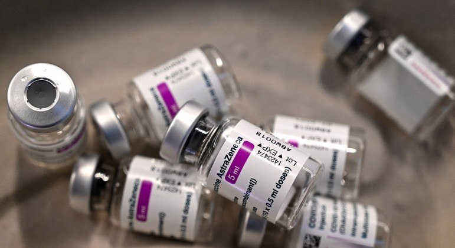

Notícias de Saúde
Brasil recebe em Maio insumos para fabricar 25 milhões de doses
R7.

O Brasil deve receber ainda em maio insumos suficientes para a fabricação de 25 milhões de doses de vacinas contra a covid-19. O secretário-executivo
do Ministério da Saúde, Rodrigo Cruz, afirmou durante audiência no Senado nesta segunda-feira (17) que a Fiocruz (Fundação Oswaldo Cruz) deve receber
até o dia 22, próximo sábado, dois lotes de IFA (Ingrediente Farmacêutico Ativo) para a produção de mais 18 milhões de doses da vacina da AstraZeneca.
“A gente teria dois embarques confirmados, um para o dia 21, com chegada aqui no dia 22, e um planejado para o dia 28, com chegada aqui no dia 29.
A boa notícia é que hoje recebi a confirmação de que esses dois lotes vão ser embarcados no dia 21 de maio, é uma quantidade suficiente para a produção
de mais ou menos 18 milhões de doses", disse Cruz.
A Fiocruz havia sinalizado ter IFA suficiente para manter a produção da vacina até meados desta semana, o que garante a entrega do imunizante até a
primeira semana de junho.
Além disso, o governador de São Paulo, João Doria, informou, por meio de um post no Twitter, que o Instituto Butantan deve receber no dia 26 de maio 4 mil
litros de insumos para a produção de 7 milhões de doses da CoronaVac. A produção do imunizante está interrompida desde quinta-feira (13) por falta de
matéria-prima.
“Boa notícia! O Butantan recebeu nesta manhã da China a previsão do envio de nova remessa de insumos ao Brasil para produção da Vacina do Butantan.
A chegada do novo lote com 4 mil litros de insumos, capazes de produzir 7 milhões de doses da vacina, está prevista para o dia 26/05”, diz a publicação.